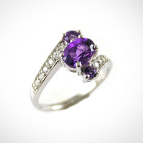

Our interesting story
Science in the media always seems to be very one-sided. News media chasing sensations and much has been written about the research, "British scientists" and the low probability, but high-profile discoveries, which may take place in the future, not only paying attention to really important things. In addition, the Internet, magazines and television are often held discussions on
Science in the media always seems to be very one-sided. News media chasing sensations and much has been written about the research, "British scientists" and the low probability, but high-profile discoveries, which may take place in the future, not only paying attention to really important things. In addition, the Internet, magazines and television are often held discussions on
How does it work?
You can ask your question by filling in the form
Callback
You can choose your size, decoration material (silver, gold)
unique.
You can write a variety of phrases, change shape, and even adjust the polishing.
You can use a credit card, and other convenient for you.
On this site you can choose the most convenient way for delivery.
We beautifully pack and deliver your decoration in our signature box.
As credit cards, and other convenient for you.
Why choose we?
Simplicity
Handmade
The uniqueness
Trust
- 
-
Our jewelery
As with any other phase of the project, this stage should also be assessed at all stages and in any way possible. The more you study this stage, the better you understand your users, the reasons for which they leave or stay, and this information will increase the number of the latter. Below you will find 21 tips for organizing user activation, which will help
As with any other phase of the project, this stage should also be assessed at all stages and in any way possible. The more you study this stage, the better you understand your users, the reasons for which they leave or stay, and this information will increase the number of the latter. Below you will find 21 tips for organizing user activation, which will help
-
Our photoblog
Like any other phase of the project, this phase should also be assessed at all stages and in any way. The more you study this stage, the better you understand your users, the reasons for which they leave or stay, and this information will allow to increase the number of the latter. Below you will find 21 Council for organizing activated users that will help
Like any other phase of the project, this phase should also be assessed at all stages and in any way. The more you study this stage, the better you understand your users, the reasons for which they leave or stay, and this information will allow to increase the number of the latter. Below you will find 21 Council for organizing activated users that will help
Comments from our customers
You can ask your question by filling in the form
Callback